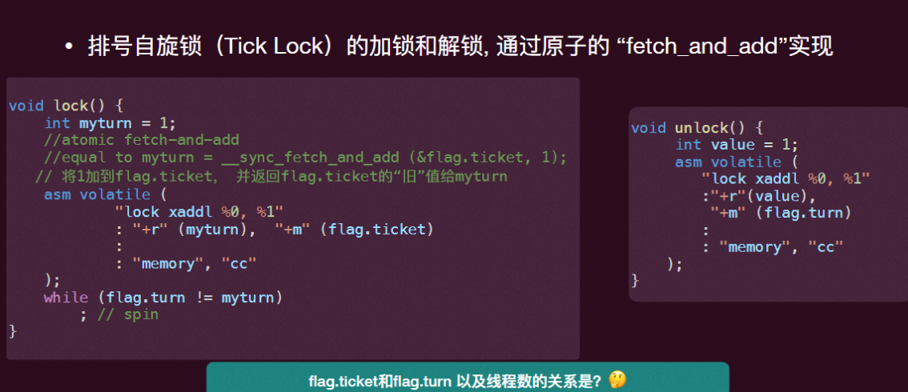
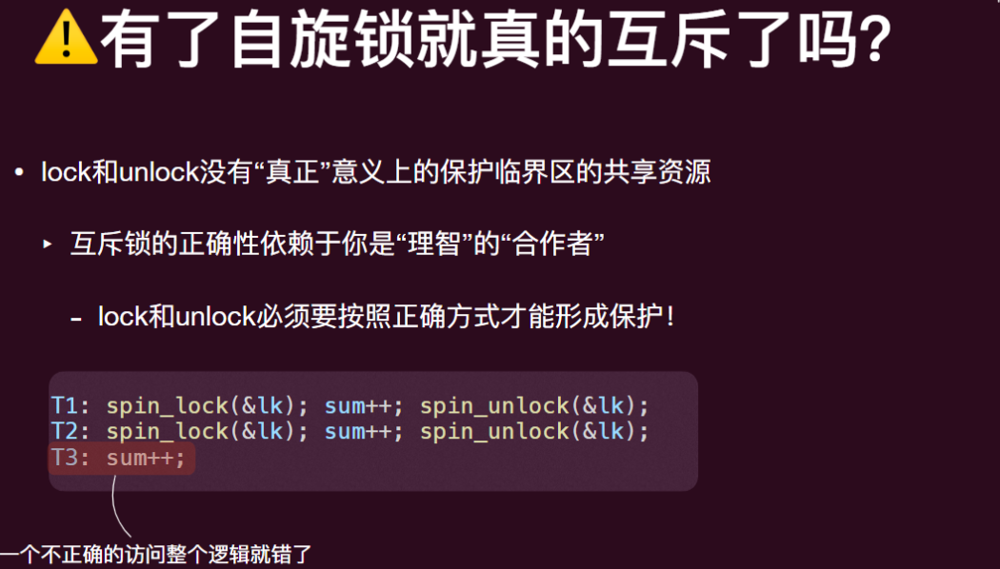
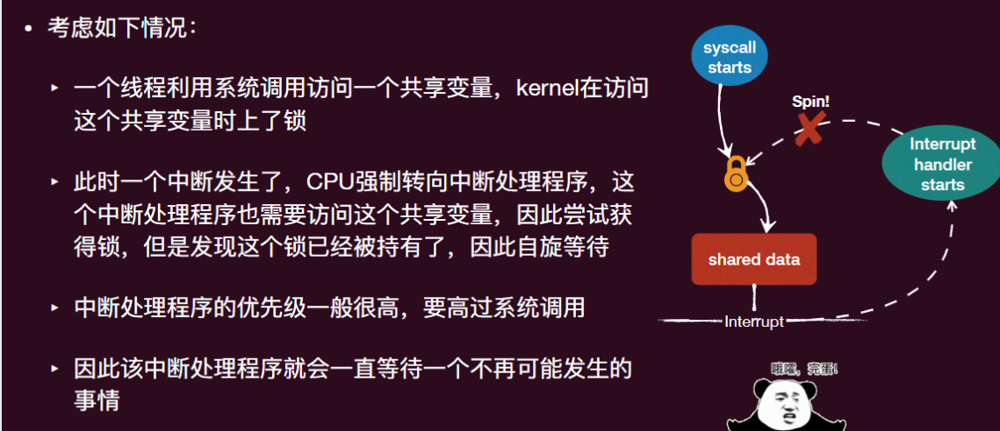
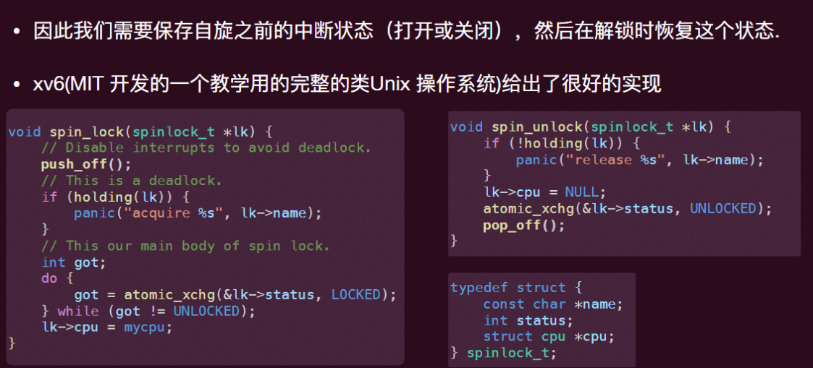

操作系统-05并发-互斥(进阶)
自旋锁的改进
排队
当一个线程在自旋等待（也叫忙等待，busy waiting）时，它一定能够最终进入临界区吗？
- 不一定，如果一直有其它线程要进入临界区，并且这些其他线程⼀直被优先调度进入临界区（我们不能假定调度策略），那这个线程就可能会⼀直等在那里（违背了有界等待）
- 解决方法——排队
方法：每次尝试进入临界区就拿一个“号”（下一个尝试的“号”加一），等待“叫号”
1 | |

更细粒度的锁
并不是所有线程都“彼此”需要互斥，我们应该给需要彼此互斥的线程池他们独有的“锁”，更加“细粒度”的锁可以提高并发性能。

unlock 前应保证持有锁，否则可能会打开别人的锁
在内核中实现自旋锁的问题
问题：某个线程持有了一个共享变量的 lock，发生中断，但该变量已被持有，中断优先级又很高（必须先完成），就会该中断导致不断等待

xv6 中自旋锁的实现

应用程序里使用互斥锁问题
自旋锁本身存在的问题：
性能问题：除了进⼊临界区的线程，其他处理器上的线程都在空转
- 如果临界区执⾏时间过⻓（⽤户线程的常态），其他线程浪费的 CPU 越多
- 此外，如果发⽣中断将临界区的线程切出去了，计算资源浪费更加严重
解决方案：yield
直接 yield：利⽤系统调⽤ sched_yield () 直接让出 cpu，让其他线程获得 CPU 使⽤
- 问题：
- yield 只是暂时让出 CPU，该线程还处在“ready”的阶段，随时可以被再次调度。
- 在获得锁之前，反复的“被调度—>让出 CPU”会带来⼤量不必要的 contextswitches
解决方案：
- ⽤户使⽤和释放锁应该和 OS 调度程序配合：
- mutex_lock (&lk): 试图获得 lk，如果失败 (lk 已被持有)，利⽤系统调⽤阻塞该线程（此时不是就绪态，⽆法被调度了），让出 CPU 并将其加⼊等待锁的队列之中。否则，成功获得锁进⼊临界区。
- mutex_unlock (&lk): 释放锁，如果等待该锁的队列⾥有线程就利⽤系统调⽤ 选择⼀个唤醒，使其变成就绪态（ready），从这个等待队列删除，并进⼊ 就绪的队列，可以被再次调度。
- 操作系统需要对⼀个锁维持⼀个与其相关的队列
- 当然，队列操作（如增加⼀个等待线程）需要内核的⾃旋锁保护
Linux 提供两个系统调用
futex_wait (int *address, int expected)- ⾸先原⼦的 test 此时 address 指向的值和期待的值是否相等，相等才会将线程阻塞，否则⽴即返回给⽤户线程，使其可以⽴⻢再次尝试 lock！
futex_wake(int *address)- 唤醒一个等待 address 指向的锁的线程
利用系统调用进行加锁的问题
- 虽然避免了⾃旋浪费 CPU，但每次进⾏ Lock/Unlock 都要陷⼊内核（这当然需要额外的开销，⽐如上下⽂切换）
- 只有内核才能让线程“阻塞”、“yield”，线程⽆法独⽴完成这样的操作
- 但是其实真实的 workload 中，多个线程抢⼀个锁的事件发⽣的频率并不⼤， 很多时候往往是⼀个线程加⼀个锁进⾏保护
- 这个时候使⽤之前的 spinlock 会更加快速！因为其不⽤陷⼊内核，也不会空转
Linux 的 Futex 是这样的两阶段锁
- Fast Path：自旋一次：一次原子指令，成功直接进入临界区
- Slow Path：自旋失败：按照情况利用系统调用 futex_wait，阻塞自己
并发数据结构
并发数据结构：线程安全的数据结构指的⼀个数据结构可以被多个线程并发的访问
- 要达成这样的数据结构⼀般我们需要在访问和更新该数据结构时上锁（⼀把或多把）
最简单的做法：⼀把⼤锁（One Big Lock）！所有访问都串⾏化。但在多处理器时代，可能会造成性能瓶颈
层级化的并发解决方案
- 并不是所有并发都是硬件提供的，也不是都是软件
- ⽽是，硬件提供了基本的原⼦指令（如 cmpxchg），操作系统提供了⼀些并发 (同步) 的原语（如 futex_wait, futex_wake），库函数包裹⼀些好⽤的 APIs (如 pthread_mutex_lock, pthread_mutex_unlock)，最后⽤户使⽤这些原语来构建正确和⾼效的并发程序
总结
- 软件上实现“互斥”很难，⽽且在现代计算机系统下也不正确
- 通过硬件⽀持的原⼦指令可以实现⾃旋锁，从⽽正确实现互斥
- 然⽽实际的互斥锁有更多的考量：
- 在内核中的互斥锁要考虑中断带来的麻烦
- ⽽在⽤户态由于临界区过⻓，⾃旋出现性能问题，⽽解决这个问题需要操作系统和⽤户态共同完成⼀个 wait-wakeup 的原语，正确的实现同样不简单！
操作系统-05并发-互斥(进阶)
https://astronautbase.github.io/2025/08/25/操作系统-05并发-互斥-进阶/